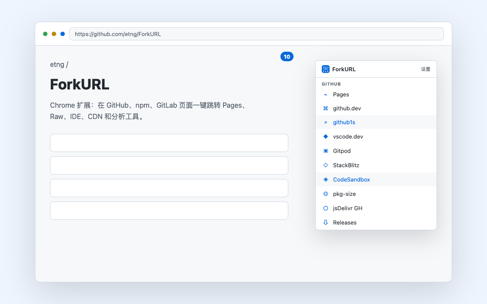

工具栏徽标
匹配页面时显示可用跳转数量。不向页面注入浮层，页面 DOM 保持干净。
URL 工具跳转扩展
打开仓库、包页面或代码资源时，ForkURL 会在工具栏显示可用跳转数量。点开图标即可前往 Pages、Raw、github.dev、CDN、依赖分析等相关工具。

安装
当前公开版本通过 GitHub Releases 分发。Chrome 和 Edge 可加载解压后的扩展目录；商店入口准备好后会在这里更新。
功能
匹配页面时显示可用跳转数量。不向页面注入浮层，页面 DOM 保持干净。
默认规则可随版本打包，也可从公开 JSON 地址定时同步，适合快速补充新站点。
自定义组、规则和链接都能在设置页维护，并可用示例 URL 验证生成结果。
内置 Simple Icons 与 Lucide 图标，也可选择启用 Iconify 在线搜索并缓存到本地。
默认规则
打开匹配页面时，ForkURL 会只展示当前页面可用的目标。下面是公开默认规则快照，帮助你快速判断哪些页面已经有现成入口。
当前公开默认规则包含 14 个规则组、23 条页面匹配规则、77 个跳转目标。
The public default snapshot includes 14 groups, 23 matching rules and 77 shortcut targets.
目标表
| 规则组 | 匹配页面 | 默认跳转目标 | 数量 |
|---|---|---|---|
| GitHub | GitHub 仓库主页 | Pages, github.dev, github1s, vscode.dev, Gitpod, StackBlitz, CodeSandbox, pkg-size, jsDelivr GH, Releases | 10 |
| GitHub | GitHub 文件 (blob) | Raw, github1s, github.dev, RawGitHack, HTMLPreview | 5 |
| GitHub | GitHub Pull Request | github.dev, ReviewNB, Patch, Diff | 4 |
| GitHub | GitHub Commit | Patch, Diff | 2 |
| GitHub | GitHub Release Tag | Tag ZIP, Tag tar.gz | 2 |
| GitHub | GitHub Gist | Raw, Blocks | 2 |
| npm | npm 包页面 | unpkg, jsDelivr, Bundlephobia, Packagephobia, pkg-size, npmgraph, RunKit, Socket, deps.dev, Registry JSON, unpkg meta, jsDelivr CDN, esm.sh, bundlejs, publint, npm trends, Snyk Advisor | 17 |
| GitLab | GitLab 仓库 | Pages, Gitpod | 2 |
| GitLab | GitLab 文件 (blob) | Raw | 1 |
| Bitbucket | Bitbucket 仓库 | Source, Gitpod | 2 |
| Bitbucket | Bitbucket 文件 | Raw | 1 |
| PyPI | PyPI 项目页 | JSON API, deps.dev, Libraries.io, Snyk Advisor, piwheels | 5 |
| Rust crates | crates.io 包页面 | docs.rs, docs.rs JSON, deps.rs, deps.dev, crates API | 5 |
| Go | pkg.go.dev 模块页 | deps.dev, GoDocs, Proxy latest | 3 |
| Maven | Maven Central Artifact | Central, deps.dev | 2 |
| RubyGems | RubyGems 包页面 | deps.dev, Libraries.io, Gemdocs, BestGems | 4 |
| Packagist | Packagist 包页面 | Metadata JSON | 1 |
| VS Code Marketplace | VS Code 扩展 | Open VSX | 1 |
| Docker Hub | Docker 官方镜像 | library repo, OCI Explorer, deps.dev | 3 |
| Docker Hub | Docker 命名空间镜像 | OCI Explorer, deps.dev | 2 |
| SNS | status page | To Article | 1 |
| SNS | article page | To Status | 1 |
| Android | GooglePlayApk | ApkPure | 1 |
| Group | Page type | Built-in targets | Count |
|---|---|---|---|
| GitHub | Repository page | Pages, github.dev, github1s, vscode.dev, Gitpod, StackBlitz, CodeSandbox, pkg-size, jsDelivr GH, Releases | 10 |
| GitHub | File page | Raw, github1s, github.dev, RawGitHack, HTMLPreview | 5 |
| GitHub | Pull request | github.dev, ReviewNB, Patch, Diff | 4 |
| GitHub | Commit page | Patch, Diff | 2 |
| GitHub | Release tag | Tag ZIP, Tag tar.gz | 2 |
| GitHub | Gist | Raw, Blocks | 2 |
| npm | Package page | unpkg, jsDelivr, Bundlephobia, Packagephobia, pkg-size, npmgraph, RunKit, Socket, deps.dev, Registry JSON, unpkg meta, jsDelivr CDN, esm.sh, bundlejs, publint, npm trends, Snyk Advisor | 17 |
| GitLab | Repository page | Pages, Gitpod | 2 |
| GitLab | File page | Raw | 1 |
| Bitbucket | Repository page | Source, Gitpod | 2 |
| Bitbucket | File page | Raw | 1 |
| PyPI | Project page | JSON API, deps.dev, Libraries.io, Snyk Advisor, piwheels | 5 |
| Rust crates | Crate page | docs.rs, docs.rs JSON, deps.rs, deps.dev, crates API | 5 |
| Go | Module page | deps.dev, GoDocs, Proxy latest | 3 |
| Maven | Artifact page | Central, deps.dev | 2 |
| RubyGems | Gem page | deps.dev, Libraries.io, Gemdocs, BestGems | 4 |
| Packagist | Package page | Metadata JSON | 1 |
| VS Code Marketplace | Extension listing | Open VSX | 1 |
| Docker Hub | Official image page | library repo, OCI Explorer, deps.dev | 3 |
| Docker Hub | Namespace image page | OCI Explorer, deps.dev | 2 |
| SNS | Status page | To Article | 1 |
| SNS | Article page | To Status | 1 |
| Android | Google Play app page | ApkPure | 1 |
自定义
内置规则只是常用入口。你可以在扩展设置页新增自己的组、正则和跳转链接，也可以配置远程规则源，让团队共享同一份规则 JSON。
使用流程
ForkURL 只把当前 URL 用于本地规则匹配。匿名遥测只统计安装、每日活跃和入口使用，不记录页面 URL、域名、跳转目标或自定义规则。